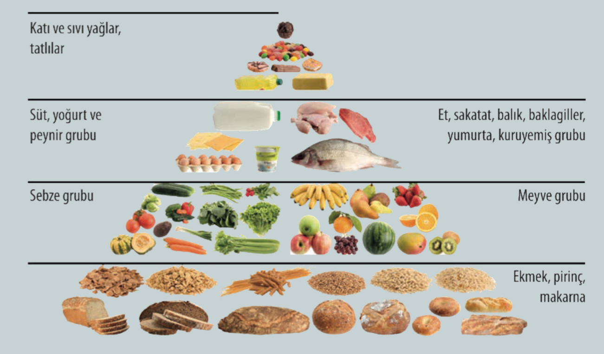
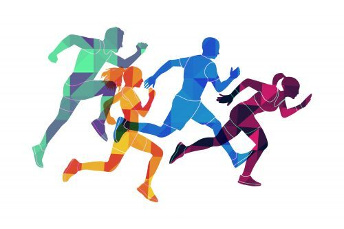
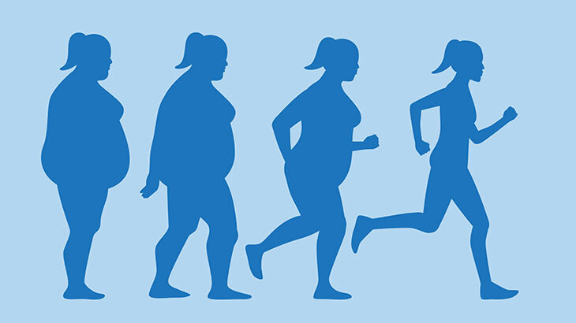

Proje Konusuna Giriş

Hoş geldiniz! Bu sunum, Sağlık Bilgisi ders kitabı 47-63. sayfalar arasındaki konuları kapsamaktadır. Amacımız, sağlıklı bir yaşam için temel taşlar olan 'Beslenme ve Fiziksel Aktivite' ile 'Zihinsel, Duygusal ve Sosyal Sağlık' konularını incelemektir.
Sunum Akışı:
- Fiziksel Aktivite: Sağlığa etkileri ve yaşa göre sporlar.
- Beslenme: Yeterli beslenme ve Sağlıklı Yemek Tabağı.
- Obezite: BKİ hesaplama ve riskler.
- Ruh Sağlığı: Ergenlikte stres yönetimi.
Fiziksel Aktivitelerin Sağlığa Etkileri


Metabolik Eş Değer (ME) Nedir?
ME, vücudun fiziksel aktivite sırasında kullandığı oksijen miktarını ölçen bir birimdir. Dinlenme durumu 1 ME olarak kabul edilir.
Her Yaşta Spor
4-8 Yaş
- Jimnastik
- Yüzme
8-12 Yaş
- Basketbol
- Futbol
Beslenmenin Önemi

Sağlıklı Yemek Tabağı Modeli
Tabağınızı dörde böldüğünüzü hayal edin: Yarısı sebze/meyve, çeyreği tam tahıllar, çeyreği sağlıklı proteinlerden oluşmalıdır.
- Tabağın ½'si: Sebze ve Meyveler
- Tabağın ¼'ü: Tam Tahıllar
- Tabağın ¼'ü: Proteinler
Obezite: Nedenleri ve Etkileri

Beden Kitle İndeksi (BKİ)
BKİ = Vücut Ağırlığı (kg) / Boy (m)²
- 20.0 - 24.9: Normal
- 30.0 ve üzeri: Obez
Zihinsel, Duygusal ve Sosyal Sağlık

Stresle Başa Çıkma
Kısa süreli stres bizi motive ederken, uzun süreli stres bağışıklık sistemini bozabilir. Önemli olan stresi yönetebilmektir.